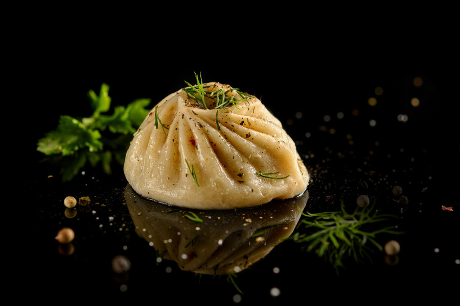

>
Лабораторная работа 2
Студенты: Алексеева Ю.А. Шаглаева А.В.
Буузы
Общие данные
Буузы
- считается, что это один из вариантов китайского блюда баоцзы, откуда происходит и название кушанья,
но в отличие от китайского аналога начинка в буузах исключительно мясная.
Блюдо также родственно грузинским хинкали и тюркским мантам.
Подобно баоцзы и мантам, позы готовятся на пару,
как правило, в специализированной для этих целей пароварке, аналоге мантоварки, носящей название позница.
В качестве основных компонентов начинка поз (фарш) содержит рублёное мясо и репчатый лук.

Секретный рецепт
Для приготовления вкуснейших бууз Вам понадобится всего лишь - 1 шт бурят.
Особенно если это Шаглаева Арюна, то Ваши буузы будут самыми наисочнейшими! Она заколит кого надо, тесто поскрестит по сусекам и нашаманить произведение искусства.
И на та ра рай буузы готовы - восхитительно!
Приятнного аппетита!
Литература
- МЕТОДИЧЕСКОЕ РУКОВОДСТВО ПО ВЫПОЛНЕНИЮ ЛАБОРАТОРНОЙ РАБОТЫ №2. Авторы-разработчики: Жмак Егор Иванович
- "Бурятские буузы. Рецепт" - https://dzen.ru/media/sokolov/buriatskie-buuzy-testo-farsh-i-mnogo-soka-vnutri-5c96006f3ee97000b37e1785
- "Что такое буузы?" - https://yandex.ru/turbo/gastronom.ru/s/text/burjatskie-buuzy-i-sekret-ih-prigotovlenija-1013612
- "10 фактов о буузах" - https://buzy.ru/10-faktov-o-buuzax/
- "Буузы(позы)" - https://livingheritage.ru/brand/respublika-buryatiya/buuzy-pozy
Цвет фона